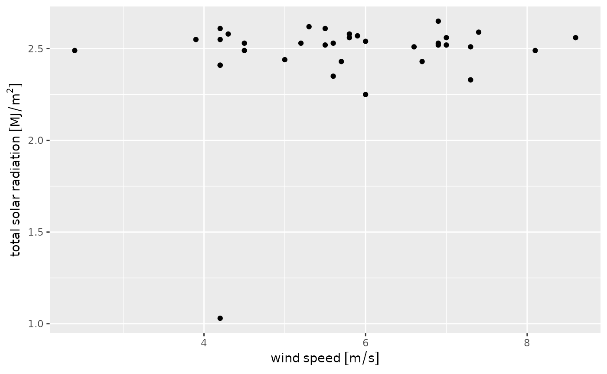

library(dplyr)
#>
#> Attaching package: 'dplyr'
#> The following objects are masked from 'package:stats':
#>
#> filter, lag
#> The following objects are masked from 'package:base':
#>
#> intersect, setdiff, setequal, unionAdding units to data
You can add the correct units to data returned by
az_daily(), az_hourly(), or
az_heat() by passing the resulting tibble to
az_add_units().
hourly <-
az_hourly() %>%
az_add_units()
#> Querying most recent hour of data ...
#> Returning data from 2024-06-26 16:00
hourly %>%
select(-starts_with("meta_"), -starts_with("date_")) %>%
head()
#> # A tibble: 6 × 33
#> dwpt dwptF eto_azmet eto_azmet_in heatstress_cottonC heatstress_cottonF
#> [°C] [degF] [mm] [in] [°C] [degF]
#> 1 16.3 61.4 0.8 0.03 31.8 89.2
#> 2 16.8 62.3 0.8 0.03 33.1 91.6
#> 3 14.9 58.7 0.8 0.03 31.6 88.9
#> 4 19.2 66.5 0.7 0.03 32.6 90.6
#> 5 16.4 61.6 0.8 0.03 33.3 92
#> 6 15.4 59.7 0.7 0.03 32 89.7
#> # ℹ 27 more variables: precip_total [mm], precip_total_in [in],
#> # relative_humidity [%], sol_rad_total [MJ/m^2], sol_rad_total_ly [langleys],
#> # temp_airC [°C], temp_airF [degF], temp_soil_10cmC [°C],
#> # temp_soil_10cmF [degF], temp_soil_50cmC [°C], temp_soil_50cmF [degF],
#> # vp_actual [kPa], vp_deficit [kPa], wind_2min_spd_max_mph [miles/h],
#> # wind_2min_spd_max_mps [m/s], wind_2min_spd_mean_mph [miles/h],
#> # wind_2min_spd_mean_mps [m/s], wind_2min_timestamp <dttm>, …This requires that you have the units package installed
and will prompt you to do so if you don’t have it installed. It may also
be helpful to explicitly load the package with
library(units) so that the resulting tibble displays the
units correctly.
Using units columns
az_add_units() converts numeric vectors to those of
class “units”. These units columns behave differently than ordinary
numeric vectors and have a few useful properties. First, you can do unit
conversion using set_units() from the units
package.
hourly %>%
transmute(wind_spd_kph = set_units(wind_spd_mps, "km/h"),
sol_rad_total = set_units(sol_rad_total, "W h m-2"),
temp_airK = set_units(temp_airF, "Kelvins"))
#> # A tibble: 31 × 3
#> wind_spd_kph sol_rad_total temp_airK
#> [km/h] [h*W/m^2] [K]
#> 1 17.6 733. 311.
#> 2 16.6 714. 314.
#> 3 20.5 706. 311.
#> 4 11.9 728. 312.
#> 5 9.36 728. 315.
#> 6 10.4 717. 312.
#> 7 14.8 717. 314.
#> 8 16.2 636. 308.
#> 9 10.8 706. 314.
#> 10 13.7 711. 314.
#> # ℹ 21 more rowsSecond, it won’t allow you to do math where the units aren’t compatible.
hourly %>%
transmute(wind_rain = wind_spd_mps + precip_total)
#> Error in `transmute()`:
#> ℹ In argument: `wind_rain = wind_spd_mps + precip_total`.
#> Caused by error:
#> ! cannot convert mm into m/sThat also means that you generally cannot add or subtract unitless constants.
## This will error:
# hourly$wind_spd_mps[1] + 10
## Must use:
hourly$wind_spd_mps[1] + set_units(10, "m/s")
#> 14.9 [m/s]Plotting with units
The units package works with ggplot2 to
automatically include units in axis labels.
library(ggplot2)
ggplot(hourly, aes(x = wind_spd_mps, y = sol_rad_total)) +
geom_point() +
labs(x = "wind speed",
y = "total solar radiation")
#> Warning: The `scale_name` argument of `continuous_scale()` is deprecated as of ggplot2
#> 3.5.0.
#> This warning is displayed once every 8 hours.
#> Call `lifecycle::last_lifecycle_warnings()` to see where this warning was
#> generated.